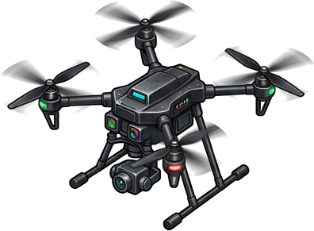
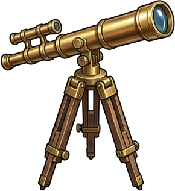
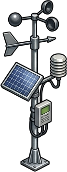
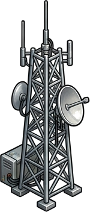

Monitoreo Aéreo & Coberturas LULC
Ortomosaico multiespectral, clasificación de suelos de la cuenca (agrícola, forestal, nativo) y vigor NDVI.

Mirador & Locaciones Estratégicas
Vuela de inmediato a Fundo Meniel, Embalse Bullileo, Retiro Pueblo, Parral Centro o el Cruce del Río Longaví.
Dinámica Hídrica & Batimetría
Caudal Longaví (124.5 m³/s), amortiguación con Keyline, batimetría Bullileo y simulador de anegamiento T=10/50/100.

Piro-Riesgo FWI & Viento Puelche
Monitoreo de ráfagas secas del este, combustible fino FFMC y frente de llama Rothermel sobre plantaciones contiguas.

Telemetría de Cuenca & Pozos APR
Cobertura LoRaWAN y niveles freáticos de los 5 Comités de Agua Potable Rural (Retiro, Copihue, Romeral, Villaseca).
Obras Paisajísticas & Mitigación
Portafolio de 4 obras territoriales: Tranque Bullileo 2, Faja Cortafuegos Borde Cordillera y Reforestación Ribereña.
Instrumento Diegético
Locaciones Estratégicas de la Cuenca (Vistas Predefinidas)
Puntos neurálgicos de monitoreo en la cuenca. Haz clic en cualquiera para volar inmediatamente en el visor cartográfico: